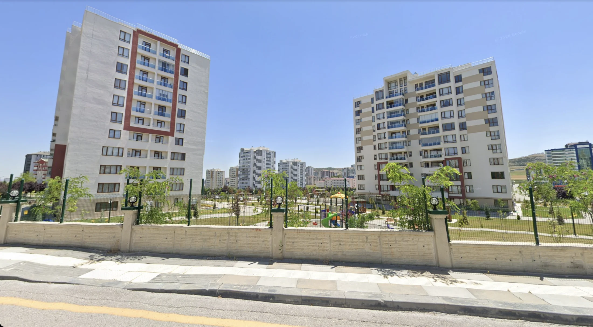
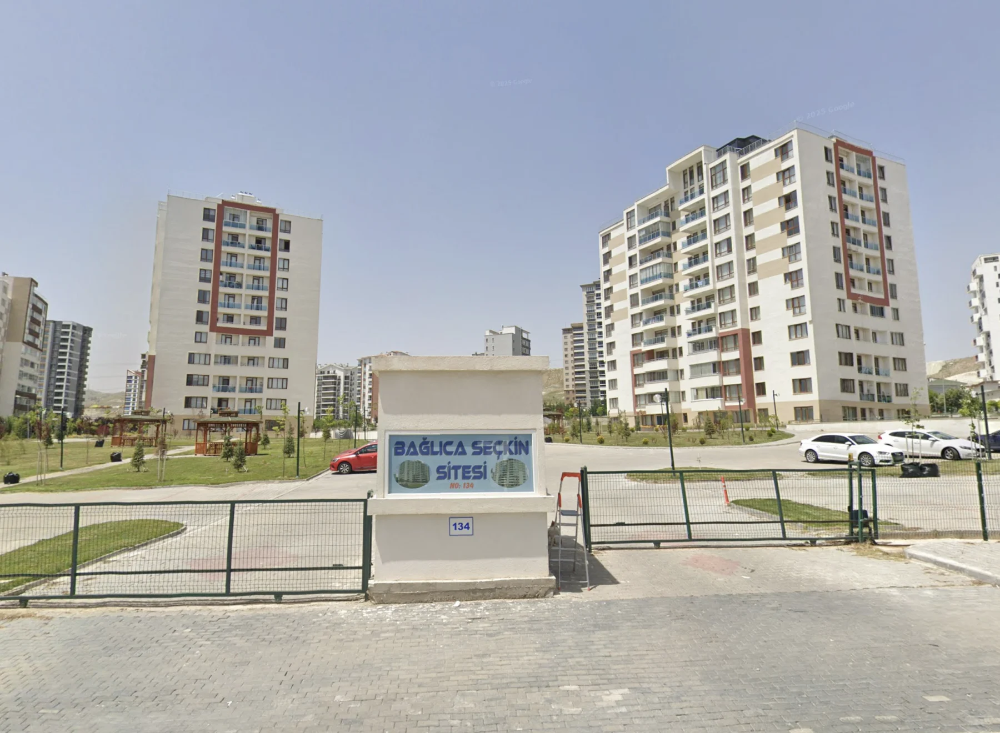

İki blok,
bir komşuluk.
Geniş bir arazi üzerinde konumlanan iki blokta ortak bir site yaşamı.

BAĞLICA · ANKARA
İki blok, geniş bir bahçe.
Komşuluğa ve hayata daha çok yer.
01 / SİTEMİZE HOŞ GELDİNİZ
Ankara’nın Etimesgut ilçesinde, Çambayırı Caddesi üzerindeyiz. Geniş bir araziye yayılan iki bloğumuz, açık alanları ve komşuluğa yer açan bahçesiyle aynı yaşamı paylaşıyor.
Basketbol sahasında hareketin, çocuk oyun alanında oyunun, bahçede açık havanın tadını çıkarıyoruz. Her iki blokta bulunan kapalı otopark ise günlük yaşama kolaylık katıyor.
Mahallemizde yerinizi bulun ↗
SİTEMİZDE YAŞAM
Açık havada buluşmak, birlikte vakit geçirmek
ve günün sonunda evinize dönmek için.
Geniş bir arazi üzerinde konumlanan iki blokta ortak bir site yaşamı.
Blokların çevresinde yeşil alanlar, yürüyüş yolları ve açık havada dinlenme alanları.
Site içindeki basketbol sahasında spor ve birlikte geçirilen zaman.
İki bloğun da kapalı otoparkı sayesinde araçlarınız için kapalı park alanı.
Bahçedeki çocuk oyun alanı, küçük komşularımızın açık havada oyunla buluştuğu yer.
Site yönetim birimi, A Blok’un en alt katında yer alıyor.
SAKİNLERİMİZ İÇİN
Aidat ve hesap bilgileri, duyurular ve yönetime talepler için Konsiyon hesabınıza ulaşın.
Konsiyon üye girişiGiriş için yönetim tarafından tanımlanan hesabınızı kullanın. Hesap erişimi için A Blok’un en alt katındaki yönetim birimine başvurabilirsiniz.
02 / FOTOĞRAF GALERİSİ
Yönetimin galerisinden ve ortak alanlarımızdan.
Fotoğraflara dokunarak büyütün, tüm kareleri inceleyin.
Fotoğraf kaynağı: Bağlıca Seçkin Sitesi yönetim sayfası
Google kaynaklı sokak görüntülerindeki tarihler ve mevcut görünüm farklılık gösterebilir. Görselleri büyüterek inceleyebilirsiniz.
DUYURU PANOSU
Site yönetiminin hesabınıza paylaştığı duyuruları Konsiyon üzerinden takip edebilirsiniz.
Diğer site sayfası: baglicaseckinsitesi.com.tr
MEVZUAT & SIK SORULANLAR
Yönetim, toplantı ve kat malikliği hakkında
merak edilen temel konular.
Bu kısa özetler genel bilgilendirme içindir. Uygulamada güncel kanun, yönetim planı ve toplu yapılara ilişkin özel hükümler birlikte değerlendirilir.
Sekiz veya daha fazla bağımsız bölümü olan anagayrimenkullerde yönetici atanması zorunludur. Bütün bölümler tek kişiye aitse malik yöneticidir.
634 sayılı Kanun · Madde 34Genel kural, kat maliklerinin sayı ve arsa payı çoğunluğuyla seçimdir. Toplu yapılarda özel atama hükümleri de dikkate alınır.
634 sayılı Kanun · Madde 34, 71Yönetim, bir yöneticiye veya üç kişilik bir kurula verilebilir. Seçim ve yetkiler kanunla birlikte yönetim planına göre değerlendirilir.
634 sayılı Kanun · Madde 34Önce yönetim planındaki tarih esas alınır. Tarih yoksa olağan toplantı ocak ayındadır; toplu yapılarda kanunun iki yıllık özel düzenlemesi bulunur.
634 sayılı Kanun · Madde 29Her malik arsa payından bağımsız oy kullanır. Birden fazla bağımsız bölüm ve vekâlet bakımından kanundaki oy sınırları uygulanır.
634 sayılı Kanun · Madde 31Kat malikleri, halefleri, yönetici ve denetçiler kurul kararlarına uymakla yükümlüdür. Kararlara karşı kanundaki başvuru yolları saklıdır.
634 sayılı Kanun · Madde 32, 33Yönetici veya yönetim kurulu, kat malikleri arasından ya da dışarıdan seçilebilir.
634 sayılı Kanun · Madde 34Kurul kararlarını uygulamak, bakım ve koruma işlerini yürütmek, ödemeleri takip etmek ve kurulu toplantıya çağırmak temel görevler arasındadır.
634 sayılı Kanun · Madde 35–37Konu başlıkları site yönetiminin mevzuat bölümünden alınarak sadeleştirildi. Kaynak: 634 sayılı Kat Mülkiyeti Kanunu. İçerik kontrolü: 23 Kasım 2026.
04 / KONUM & İLETİŞİM
Bağlıca Seçkin Sitesi
Yeni Bağlıca Mah., Çambayırı Cd. No:134A Blok · En alt kat